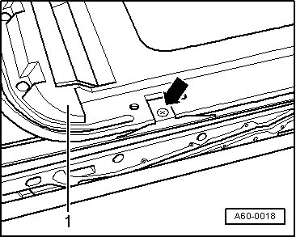
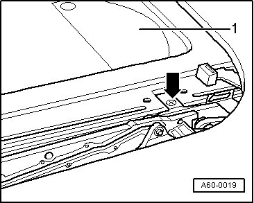

Sun Shade
Sunroof with Glass Panel
Sun Shade
- Removing glass panel for sunroof.
- Slide sun shade rearward.
- Remove front bolts - arrow - at left and right. Slide out slider toward front over stop - 1 -.

- Slide sun shade toward front.
- Remove rear bolts - arrow - at left and right. Slide slider toward rear and remove sun shade - 1 - upward.
